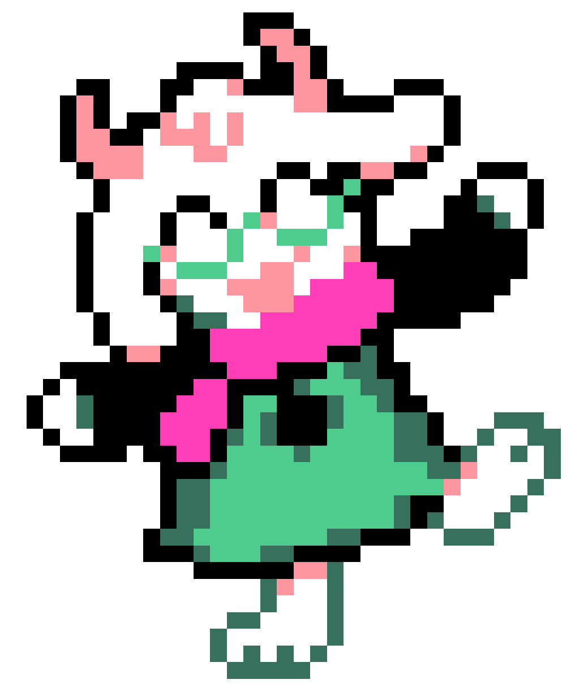

callmekt
HomeMy Deltarune Theory - What Exactly is Ralsei?
Forewarning to the reader: I have absorbed entirely too much Deltarune theory content while working on cross stitching projects.
...But it's my website, and I'll do what I want!
Who is this fluffy prince?

This 100% speculation text was written for fun on July 26, 2026 - after the release of Chapter 5 and before even the faintest amount of news about Chapter 6.
He's Not a Light World Object:
From the first Chapter of Deltarune, it's been fun to theorize about Ralsei's identity. We learn bit by bit about the true nature of Darkners: Lancer is a playing card, Queen is a laptop, and so on... so it's only natural to wonder what Ralsei's identity in the light world might be.
Kris's costume horns are a clear choice. Ralsei's horns are colored in a way on his colored sprite that draws our eyes to them, and it solidifies the connection between him and Kris's childhood alongside the other Darkners.
But, I don't think this is the case. Here's some reasons why, in order of relative strength:
- Ralsei is clearly hiding some major truths from the player, and probably also Kris.
- Ralsei doesn't turn to stone, like other Darkners do when they leave their worlds.
- Something about Ralsei's home - Castle Town - is fundamentally different from other dark worlds.
- Flowery calls Ralsei "an impossibility".
- Ralsei doesn't seem to have any attachment to his identity at all, even though other Darkners aren't too concerned about their "true" identities as light world objects.
- Ralsei seems willing to change himself into whatever he feels he "needs" to be.
With all that in mind, here's my thought:
Ralsei is a Darkner of a Darkner!
This is to say - he's from a dark world within a dark world, or an even "deeper" dark world in some other way.
Evidence for my Insanity:
- THE THIRD HERO. THE PRINCE, ALONE IN DEEPEST DARK.
- The Prince isn't just from the dark. He's from deepest dark. Darker, yet darker
- Ralsei immediately identified when a dark fountain had been opened within a dark fountain. How interesting.
- The other Darkners seem to have a history with each other (fabricated or real). Why was Ralsei "alone" in the deepest dark?
- Ralsei has capabilities beyond other Darkners. It's implied that if he didn't hold back he could do anything.
What I Think This Means:
- Ralsei has no true identity or appearance. He's not costume horns, or a book, or a scarf. He's an abstraction of an abstraction.
-
Well then, why does he look like Asriel?
-
This was done to appeal to us, the player, because we are naturally attached to Asriel.
- ...You all voted to hug the goat in AGDQ, right?
- Asgore comments that he only sort of looks like Asriel from a glance.
-
This was done to appeal to us, the player, because we are naturally attached to Asriel.
- In actuality, Asriel is much more like a Titan than a Darkner. His true appearance and strength may be frightening.
- The last prophecy actually has to do with him.
- He doesn't want the player to see it, perhaps because if we grow too attached to him we won't do what he thinks must be done.
- I think the Knight is a similar sort of being, and not specifically one person from Hometown.
Deltarune is a game about reckoning with contrasts.
He tries to avoid allowing the Lightners to get attached to him, and getting attached to them in return, because it will prevent him from doing what "must be done".
He is presenting himself in a certain way to fulfill the role of the Prince, because that's what "must be done" regardless of his personal feelings.
A Darkner Squared?
I'll explain one way I think this could work by discussing the Roaring Knight.
As I said above, the Knight isn't one specific person. Instead, I posit that the Knight is actually the shared trauma of Dess's disappearance.
Dess's disappearance has left a deep scar on everyone in Hometown. Everyone is handling it differently. Asgore feels responsible in some way, Noelle sunk into a depression, Carol won't discuss the matter.
This shared grief has cast its own shadow into the dark world - a strange amorphous monstrous being with some elements of Dess and some elements of the Titans themselves.
Well then what is Ralsei, Specifically?
The shadow of the prophecy itself.
...Hey.
Do you think we can change the prophecy?